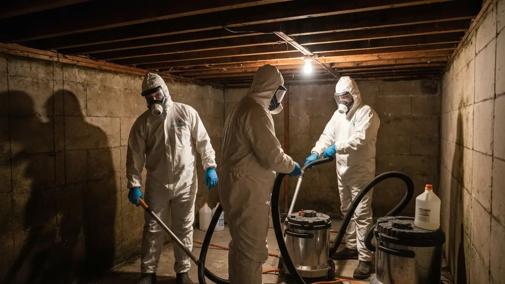

Found Mold? Here's What You Need to Know First.
Castle Rock's rapid growth has produced thousands of newer homes with finished basements — and a persistent misconception that new construction doesn't get mold. It does. Colorado's humidity swings — bone-dry periods followed by intense monsoon moisture — push water against foundations and into window wells. When it gets inside a finished wall assembly, it creates the ideal conditions for mold growth that's invisible until the smell or health symptoms appear.
Mold is a solvable problem. The key is handling it correctly — containment before disturbance, removal of all affected porous materials, moisture source addressed, and independent testing to confirm it's done. We follow certified protocols on every job regardless of location.

Why Newer Construction Isn't Immune
Finished basements hide moisture problems inside wall assemblies. The drywall and insulation in finished basement walls absorb and hold moisture in ways unfinished concrete block doesn't. A window well that backs up once during a monsoon event can introduce enough moisture to sustain mold growth for months inside the wall — visible on the surface only after significant growth has occurred.
Tight building envelopes trap moisture once it enters. Modern construction seals well against outside air — but that same tightness means moisture that enters through foundation walls, plumbing leaks, or condensation is less able to dry out. Moisture that would evaporate in an older drafty home stays inside finished materials longer.
HVAC condensation is underestimated. Oversized AC units common in newer construction create short cycling — frequent on-off cycles that pull warm humid air into the system before it condenses properly. This leaves moisture throughout the duct system and on the air handler, creating mold conditions inside the HVAC that circulate spores building-wide.
How We Handle Mold Remediation Near Castle Rock
- Free Inspection: Moisture meter assessment and visual documentation. Written scope and price before work starts.
- Containment: Plastic sheeting and negative air pressure isolate the work zone from living areas and HVAC.
- Remove and Treat: Affected drywall and insulation removed and disposed of properly. All surfaces HEPA-vacuumed and treated with antimicrobial solution.
- Moisture Source Addressed: Window well drainage, foundation waterproofing gaps, HVAC issues, or plumbing problems identified and corrected or clearly scoped.
- HEPA Air Scrubbing: Air scrubbers run in containment before opening to the rest of the home.
- Clearance Testing: Independent air sampling confirms spore counts are normal. Written documentation.
What Castle Rock Homeowners Are Saying
"Window well flooded during a heavy monsoon and I thought I'd dried it out. Found mold inside the wall two months later. Full containment, wall opened, clearance test passed. They were right — the window well drain needed to be replaced, not just cleared."
— Brian K., Castle Rock"Pre-listing inspection turned up mold in the utility room. They scoped it, quoted it accurately, fixed it, and gave us the clearance test documentation for the buyers. Deal closed."
— Amy and Scott D., Castle RockWhat Does Mold Remediation Cost Near Castle Rock?
Small area (under 10 sq ft): $500–$1,500
Mid-size (10–100 sq ft): $1,500–$4,000
Large / whole basement section: $4,000–$9,000
Post-remediation clearance testing: $300–$500
A trip charge may apply depending on job size — confirmed on the first call. The free inspection always applies.
Quick Answers Before You Call
Do you service Castle Rock from Colorado Springs?
Yes. We serve the Castle Rock area. Call us and we'll confirm scheduling and any travel consideration for your specific location. The inspection is always free.
My home is only 5 years old. Can it really have mold?
Yes. New construction mold is typically caused by a specific moisture event — one window well backup, one slow HVAC drain pan, one plumbing leak — not years of gradual deterioration. The age of the home doesn't determine whether mold can grow; the moisture conditions do.
How long does remediation take?
Small to mid-size jobs: one day. Larger projects: 2–3 days. Exact timeline in your written estimate.
Mold Doesn't Pause. Neither Should You.
Free inspection. Written estimate. No obligation. We answer or call back within 1 hour.
(719) 496-8287